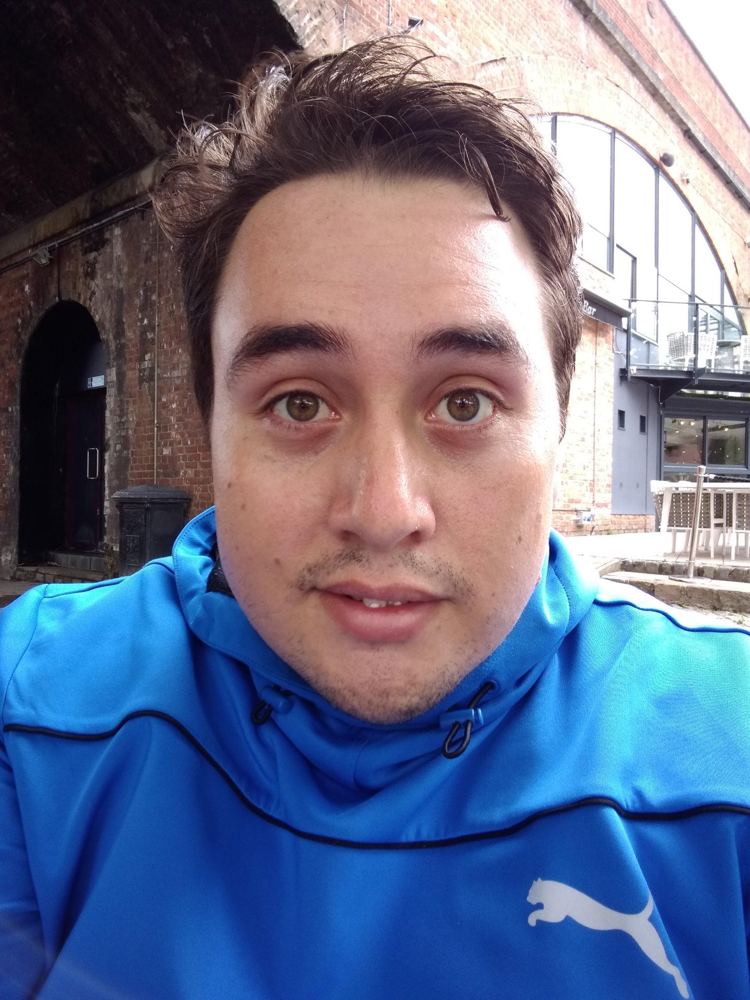

Post Image
Getting Started with Multireference Methods: A Practical Guide
A beginner-friendly overview of when and why you should reach for multireference methods in your quantum chemistry calculations...

Welcome to My Academic Portfolio
Explore my site to learn about my
Thank you for visiting!
Postdoctoral Researcher at Your Institution
My research focuses primarily on quantum chemical calculations for the study of magnetic properties and rational design of molecular qubits and to assess the bonding and molecular interactios of complexes containing actinide and lanthanide metal centers.
Research Interests:
Humboldt Postdoctoral Fellow
Group Leader: Dr. Denis Andrienko
Research Interests:
Research Project:
Plastic pollution is a major environmental concern. Our research aims to better understand the mechanisms of ring-opening polymerization (ROP) and develop faster, more efficient catalysts toward making bioplastics commercially viable.
Read MoreMetal-halide perovskites have gained significant attention for solar cells and LEDs. Our research focuses on improving exciton generation efficiency in bulk perovskites and enhancing charge transport between perovskite nanocrystals.
Read MoreWe utilize theoretical techniques such as total dipole moment vector analysis and intrinsic bond orbital visualization to distinguish between hydrogen-atom transfer (HAT) and concerted proton-coupled electron transfer (cPCET) mechanisms.
Read MoreOur research explores enzyme-mimicking catalysis by MOFs and post-synthetic modification to introduce metal-sulfur active sites for hydrogenation and C–H activation, combining multireference computational methods with experimental collaborations.
Read MoreNat. Chem. 2025, 17, 1514.
Synopsis: Catalytic efficiency (hydrogenation) of a MOF is enhanced by embedding metal-sulfur active sites through post-synthetic modification.
Mater. Horiz. 2025, 12, 6812.
Synopsis: 2D tin-based perovskite semiconductors exhibit a dual transport mechanism where charge carriers follow band-like transport on the nanoscale but hopping transport on the macroscale.
Thoughts on research, science communication, and academic life.
A beginner-friendly overview of when and why you should reach for multireference methods in your quantum chemistry calculations...
Three years into my postdoc journey, I share what I wish I had known earlier and what has made the experience truly rewarding...
MOFs are often called the most versatile materials in chemistry. Here's an accessible explanation of what makes them so special...